In 2012, the Senegalese government implemented the Informed Push Model (IPM), a supply chain model where third-party logisticians were contracted to deliver family planning supplies to service delivery points directly from regional storerooms. After the intervention pilot in Dakar in 2012 nearly eliminated stock-outs for contraceptives, the Senegalese government decided to expand the IPM across different districts over a 3-year period before scaling up the intervention at a national level.[1] There is limited evidence on the impact of the IPM on contraceptive use.[2] To help fill this gap, this work will look at trends in modern contraceptive use among postpartum women (an important beneficiary group of family planning policies and programs given the benefits of increased birth intervals on the health of mothers and their babies) before and after the IPM was implemented. Districts where the IPM was implemented prior to January 2015 will serve as the intervention districts. These districts are Dakar (Dec 2012); Kaolack and Thies (Apr 2013); Diourbel, Fatick, Kaffrine and Matam (Mar 2014); Saint-Louis (Apr 2014); and Louga (Jul 2014). Districts where the IPM was implemented after January 2015 will serve as comparison districts (Tambacounda, Kolda, Kedougou, Sedhiou and Ziguinchor).
The Demographic and Health Survey (DHS) is a nationally representative survey that collects information on socio-demographic characteristics, reproduction, knowledge and use of contraception, fertility preferences, among others. The DHS collects information on women’s reproductive history through its contraceptive calendar, a string variable containing 80 characters (with each character representing a month) that provides a retrospective account recording births, pregnancies, terminations, and contraceptive use over the 80 months preceding the survey’s publication (usually August of the year following data collection). This information can be used to determine whether, at any given month before the survey, a respondent was within the first postpartum year, and whether she was using a modern method of contraception. Data from Senegal’s 2014, 2015 and 2016 Continuous DHS were obtained [3]. The original data sets contain 3989 (2014), 3998 (2015) and 4070 (2016) variables; and n=8488 (2014), n=8851 (2015) and n=8865 (2016) observations for women ages 15-49. For this analysis, I will limit the study sample to include only respondents who have given birth in the 5 years preceding each survey (n=4584 in 2014, n=4799 in 2015 and n=4726 in 2016). The main variables that will be utilized for this analysis are individual sample weights, respondent’s district of residence, and the calendar variable:
## # A tibble: 6 × 3
## individual_weight district calendar_variable
## <dbl> <dbl+lbl> <chr>
## 1 3.19 1 [dakar] " 0000BPPPPPPPP0000000000000000…
## 2 3.19 1 [dakar] " PPPPPPP11111100000000BPPPPPPP…
## 3 3.19 1 [dakar] " 00BPPPPPPPP000000000000000000…
## 4 3.19 1 [dakar] " PPPP0000000000000000000000000…
## 5 3.19 1 [dakar] " 3333333333333TP00000BPPPPPPPP…
## 6 3.19 1 [dakar] " 11111111111111111111111111111…The outcome variable in this analysis is the monthly rate of postpartum modern contraceptive use. I use an adapted version of the UNFPA definition of modern contraceptive methods: hormonal implants, IUDs, female and male sterilization, hormonal pills and injectables, male and female condoms, and other supply methods.[4] The denominator of my outcome variable is the total number of women who were within one year of their last delivery. Among those women, the numerator is the number that are using a modern method of contraception. The codes for events captured in the string are:
“B” - Birth
“P” - Pregnancy
“T” - Terminated pregnancy/non-live birth
“0” - No contraception
Traditional methods of contraception
Modern methods of contraception
The methodology for this analysis will consist of string variable manipulation to check whether a respondent was within the first year postpartum within a given month (denominator) and of those, whether a respondent was using a modern method of contraception within a given month (numerator). This will yield six different data frames, two for each survey year. One data frame will have, for each respondent, whether or not they were using a modern method of contraception at each month over the 80 months prior to the survey. Similarly, the other data frame will record, for each respondent, whether or not at a given month they were within the first year postpartum. I complete this process for each survey year separately and will then join the six data frames into two data frames, one for postpartum observations for all survey years and the other for contraceptive use observations for all survey years. Once I’ve completed this step, I will calculate the postpartum contraceptive use rate for each month using the weights provided for the sampling units. I will graph these monthly rates for each district with visualizations for the month of the intervention in that district and will use smoothing to try to visualize differences in patterns/trends before and after the intervention took place. I will also plot each intervention district with the comparison districts.
Extensiva data wrangling was necessary to analyze this dataset. The string variable had to be parsed to be able to extract monthly contraceptive usage and also to verify whether the respondent was situated within the postpartum period. For the latter, I had to identify the position on the string for the month I was interested in, and also check the 12 preceding months to ascertain whether at any point in those previous 12 months a respondent had given birth. To illustrate this process, I show the contraceptive calendar of the 77nd respondent from our 2014 DHS sample (prior to any string manipulation):
## [1] " N0BPPPPPPPP00000BPPPPPPPP0000000000000000000000000000000000000"Read from left to right, there are 18 spaces from the start of the string to the first non-blank character, representing the 18 months between the date of publication of these data (August 2015) to the month the 77nd respondent was interviewed (February 2014). On February 2014 (19 months before August 2015), this respondent has code “N”, which means that she was using implants:
## [1] "N"The function check_mc I created can verify that this is a modern method of contraception and this respondent would be counted as having used a modern method of contraception on February 2014 (where a value = 1 means a modern method was used):
## [1] 1We can also see from the vcal_1 shown above that the respondent had given birth shortly before the month she was using an implant. We can use the check_pp function to verify whether on February 2014 she was within one month post-partum.
## [1] TRUETherefore, since on February 2014 this woman was within her first year postpartum and since she was also using a modern method of contraception, she would be counted in the numerator of our postpartum contraceptive use monthly rate. On the other hand, if we again take this same woman, on January 2014 (20 months before August 2015) we can see that she was not using a modern method of contraception, and she was also within the first year postpartum:
substr(d_14$vcal_1[77], 20, 20) #extract character for 20th month pre-interview## [1] "0"check_mc(d_14$vcal_1[77], 20) |> print() #check whether modern method (0=not modern method)## [1] 0within_pp(d_14$vcal_1[77], 20) |> print() #check within postpartum## [1] TRUEThis means that while on February 2014 she is counted in the numerator and denominator, on January 2014 she is only counted in the denominator We repeat this for every month for each respondent in all three years’ datasets.
I combined the three years’ data frames into two data frames (one for whether a respondent was in the first year postpartum and one for whether she was using a modern method of contraception). A part of one of the tables is displayed below, showing monthly contraceptive use for respondents 1 through 6 in the combined data frame for the 17-25 months prior to August 2017 (August 2015-April 2016).
## 17 18 19 20 21 22 23 24 25
## 1 1 1 1 1 1 1 0 0 0
## 2 0 0 0 0 0 0 0 0 0
## 3 1 1 1 1 1 1 1 1 1
## 4 0 0 0 0 0 0 0 0 0
## 5 1 1 0 0 0 0 0 0 0
## 6 1 1 1 1 1 1 1 1 1I calculated the monthly contraceptive use rate for January 2010 through June 2015 by district and used pivot_longer to restructure the data into a time-series data frame with one observation (“value”, the rate) for each district for each month. I used the lubridate package to generate the dates to make it easier to understand the plots of my results.
## # A tibble: 14 × 4
## district value month my
## <fct> <dbl> <int> <date>
## 1 Dakar 0.389 27 2015-06-01
## 2 Dakar 0.305 28 2015-05-01
## 3 Dakar 0.302 29 2015-04-01
## 4 Dakar 0.340 30 2015-03-01
## 5 Dakar 0.322 31 2015-02-01
## 6 Dakar 0.327 32 2015-01-01
## 7 Dakar 0.336 33 2014-12-01
## 8 Dakar 0.367 34 2014-11-01
## 9 Dakar 0.350 35 2014-10-01
## 10 Dakar 0.375 36 2014-09-01
## 11 Dakar 0.413 37 2014-08-01
## 12 Dakar 0.410 38 2014-07-01
## 13 Dakar 0.378 39 2014-06-01
## 14 Dakar 0.367 40 2014-05-01Once this was done, I could plot graphs of the monthly rate for each district. I visualize my results in two ways. The first depicts the monthly rate of postpartum contraceptive use for intervention districts only. I added a vertical line at the month and year when the IPM was implemented in each of the intervention districts and used geom_smooth using the loess curve method to get a better sense of the trends before and after the intervention took place. Below I show the original and smoothed trends for Diourbel district: 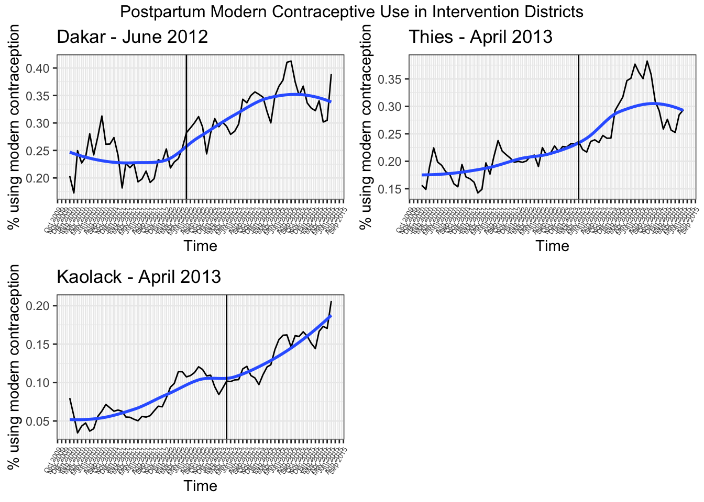 I decided to compare trends in intervention districts with districts that did not receive the intervention until after 2015. This will help me get a better sense of whether any changes in levels and/or trends after the IPM in intervention districts was due to IPM or due to other things happening in Senegal that affected non-intervention districts too. Below I show trends for Diourbel and comparison districts: 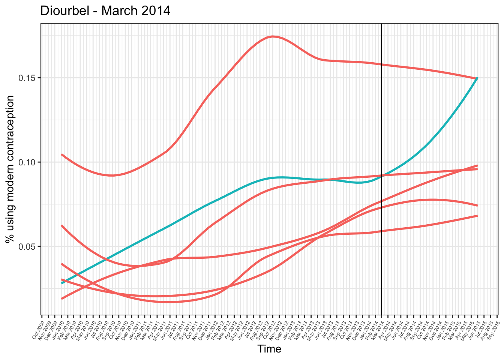
In this project, I used data wrangling and visualization, as well as smoothing to generate a descriptive, visual analysis of trends of postpartum contraceptive use among women in Senegal at the district level.
In the future, I will use this project to conduct a difference-in-differences analysis to evaluate the impact of the IPM on postpartum modern contraceptive use in Senegal at the district level. This exploratory analysis has successfully helped me identify that there are trends in the data that would be worth exploring through a more rigorous analysis.
If I had more time, some additional topics I could include in my analysis could be the use of synthetic controls to see whether the national scale-up of IPM (including all 14 of Senegal’s districts) had an impact on national postpartum contraceptive use.
[1] Cavallaro, F.L., Duclos, D., Baggaley, R.F. et al. Taking stock: protocol for evaluating a family planning supply chain intervention in Senegal. Reprod Health 13, 45 (2016). https://doi.org/10.1186/s12978-016-0163-7
[2] Krug C, Cavallaro FL, Wong KLM, Gasparrini A, Faye A, Lynch CA. Evaluation of Senegal supply chain intervention on contraceptive stockouts using routine stock data. PLoS One. 2020 Aug 3;15(8):e0236659. doi: 10.1371/journal.pone.0236659. PMID: 32745110; PMCID: PMC7398546.
[3] ICF International. Demographic and Health Surveys (various) [Datasets]. https://dhsprogram.com/data/available-datasets.cfm. Date accessed: December 2022
[4] Singh S, Darroch J, Ashford L. Adding it up: the costs and benefits of investing in sexual and reproductive health. New York: Guttmacher Institute and United Nations Population Fund; 2014 [Available at: https://www.unfpa.org/sites/default/files/pub-pdf/Adding%20It%20Up-Final- 11.18.14.pdf, Last accessed 5 November 2022].
Code, tables and graphs
#Installing packages
library(haven)
library(stringr)
library(dplyr)
library(tidyverse)
library(tibble)
library(expss)
library(vctrs)
library(labelled)
library(ggpubr)
library(lubridate)
## Importing the data
senegal_14 <- read_dta("/Users/deaoviedo/Documents/grad/classes/2 THESIS/data/Senegal 2014/SNIR70DT/SNIR70DT/SNIR70FL.DTA")
senegal_15 <- read_dta("/Users/deaoviedo/Documents/grad/classes/2 THESIS/data/Senegal 2015/SNIR7HDT/SNIR7HFL.DTA")
senegal_16 <- read_dta("/Users/deaoviedo/Documents/grad/classes/2 THESIS/data/Senegal 2016/SNIR7IDT/SNIR7IDT/SNIR7IFL.DTA")
## Generating variable for women who have given birth in the dataset (at any time)
senegal_14$gave_birth <- as.integer(str_detect(senegal_14$vcal_1, "B"))
senegal_15$gave_birth <- as.integer(str_detect(senegal_15$vcal_1, "B"))
senegal_16$gave_birth <- as.integer(str_detect(senegal_16$vcal_1, "B"))
## Generating weight variable
senegal_14$wt <- senegal_14$v005/1000000
senegal_15$wt <- senegal_15$v005/1000000
senegal_16$wt <- senegal_16$v005/1000000
## Creating separate data frames with sample of only women who have given birth in 5 yrs preceding survey
d_14 <- senegal_14 |> filter(gave_birth == 1)
d_15 <- senegal_15 |> filter(gave_birth == 1)
d_16 <- senegal_16 |> filter(gave_birth == 1)
## Viewing main variables for this analysis
d_14 |>
rename(individual_weight=wt, calendar_variable = vcal_1, district = v024) |>
select(individual_weight, district, calendar_variable)## # A tibble: 4,584 × 3
## individual_weight district calendar_variable
## <dbl> <dbl+lbl> <chr>
## 1 3.19 1 [dakar] " 0000BPPPPPPPP000000000000000…
## 2 3.19 1 [dakar] " PPPPPPP11111100000000BPPPPPP…
## 3 3.19 1 [dakar] " 00BPPPPPPPP00000000000000000…
## 4 3.19 1 [dakar] " PPPP000000000000000000000000…
## 5 3.19 1 [dakar] " 3333333333333TP00000BPPPPPPP…
## 6 3.19 1 [dakar] " 1111111111111111111111111111…
## 7 3.19 1 [dakar] " 1110BPPPPPPPP0011111111100BP…
## 8 3.19 1 [dakar] " 6666666666666666666666666666…
## 9 3.19 1 [dakar] " 00000000000000000BPPPPPPPP00…
## 10 3.19 1 [dakar] " 3333333333330000000000000000…
## # … with 4,574 more rows## Names of districts in Senegal
val_lab(d_14$v024)## dakar ziguinchor diourbel saint-louis tambacounda kaolack
## 1 2 3 4 5 6
## thiès louga fatick kolda matam kaffrine
## 7 8 9 10 11 12
## kedougou sedhiou
## 13 14## A closer look at the calendar variable
head(d_14$vcal_1)## [1] " 0000BPPPPPPPP00000000000000000000BPPPPPPPP0000000000000000000"
## [2] " PPPPPPP11111100000000BPPPPPPPP0000000000033333333333333333333"
## [3] " 00BPPPPPPPP00000000000000000000000000000000000000000000000000"
## [4] " PPPP0000000000000000000000000000BPPPPPPPP00000000000000000000"
## [5] " 3333333333333TP00000BPPPPPPPP0000000000000TPPPPPP0000000000BP"
## [6] " 111111111111111111111111111111111111111111111100BPPPPPPPP0011"table(str_length(d_14$vcal_1)) #confirming variable length of 80 characters##
## 80
## 4584## Check whether at each row of the calendar variable the respondent was using a modern method of contraception
data_mc_14 <- data.frame(matrix(NA,
nrow = nrow(d_14),
ncol = 80))
data_mc_15 <- data.frame(matrix(NA,
nrow = nrow(d_15),
ncol = 80))
data_mc_16 <- data.frame(matrix(NA,
nrow = nrow(d_16),
ncol = 80))
#Create a function to detect contraceptive method within a specific row "pos"
check_mc <- function(calendar, pos) {
sample_cal <- substr(calendar, pos, pos)
using <- as.integer(str_detect(sample_cal, "[1234567NCFEM]"))
}
#Apply check_mc function to each row in the calendar variable
using_mc_14 <- for(i in 1:80){
uses <- check_mc(d_14$vcal_1, i)
data_mc_14[ , i] <- uses
}
using_mc_15 <- for(i in 1:80){
uses <- check_mc(d_15$vcal_1, i)
data_mc_15[ , i] <- uses
}
using_mc_16 <- for(i in 1:80){
uses <- check_mc(d_16$vcal_1, i)
data_mc_16[ , i] <- uses
}
## Check whether respondents were within 12 months postpartum at particular month
data_pp_14 <- data.frame(matrix(NA,
nrow = nrow(d_14),
ncol = 80))
data_pp_15 <- data.frame(matrix(NA,
nrow = nrow(d_15),
ncol = 80))
data_pp_16 <- data.frame(matrix(NA,
nrow = nrow(d_16),
ncol = 80))
#Create a function to detect whether respondent was within 1yr postpartum
#within a specific row "pos"
within_pp <- function(calendar, pos) {
oneyear <- substr(calendar, pos+1, pos+12)
str_detect(oneyear, "B")
}
#Function to detect and ignore blank rows at the beginning of the calendar
#variable
blanks <- function(calendar, pos) {
currentmonth <- substr(calendar, pos, pos)
str_detect(currentmonth, "\\s")
}
#Apply within_pp function to each row in the calendar variable
for(i in 1:80){
blankignore <- as.integer(blanks(d_14$vcal_1, i))
postpartum <- as.integer(within_pp(d_14$vcal_1, i))
real_pp <- ifelse(blankignore == 1, NA, postpartum)
data_pp_14[ , i] <- real_pp
}
for(i in 1:80){
blankignore <- as.integer(blanks(d_15$vcal_1, i))
postpartum <- as.integer(within_pp(d_15$vcal_1, i))
real_pp <- ifelse(blankignore == 1, NA, postpartum)
data_pp_15[ , i] <- real_pp
}
for(i in 1:80){
blankignore <- as.integer(blanks(d_16$vcal_1, i))
postpartum <- as.integer(within_pp(d_16$vcal_1, i))
real_pp <- ifelse(blankignore == 1, NA, postpartum)
data_pp_16[ , i] <- real_pp
}
## Adding region variable to data frame
data_mc_14$region <- d_14$v024
data_mc_15$region <- d_15$v024
data_mc_16$region <- d_16$v024
## Adding weight variable to data frame
data_mc_14$wt <- d_14$wt
data_mc_15$wt <- d_15$wt
data_mc_16$wt <- d_16$wt
## Adding ID
data_mc_14$caseid <- d_14$caseid
data_mc_15$caseid <- d_15$caseid
data_mc_16$caseid <- d_16$caseid
## Adding survey year
data_mc_14$survey_year <- d_14$v007
data_mc_15$survey_year <- d_15$v007
data_mc_16$survey_year <- d_16$v007
## Renaming column names to represent the number of months prior to August 2017 (the month and year the 2016 survey data were published)
names(data_mc_14)[1:80] <- 25:104
names(data_pp_14)[1:80] <- 25:104
names(data_mc_15)[1:80] <- 13:92
names(data_pp_15)[1:80] <- 13:92
names(data_mc_16)[1:80] <- 1:80
names(data_pp_16)[1:80] <- 1:80
full_data_mc <- bind_rows(data_mc_16, data_mc_15, data_mc_14)
full_data_mc <- full_data_mc |> relocate("caseid", "survey_year", "region", "wt", .after = last_col())
names(full_data_mc)## [1] "1" "2" "3" "4" "5"
## [6] "6" "7" "8" "9" "10"
## [11] "11" "12" "13" "14" "15"
## [16] "16" "17" "18" "19" "20"
## [21] "21" "22" "23" "24" "25"
## [26] "26" "27" "28" "29" "30"
## [31] "31" "32" "33" "34" "35"
## [36] "36" "37" "38" "39" "40"
## [41] "41" "42" "43" "44" "45"
## [46] "46" "47" "48" "49" "50"
## [51] "51" "52" "53" "54" "55"
## [56] "56" "57" "58" "59" "60"
## [61] "61" "62" "63" "64" "65"
## [66] "66" "67" "68" "69" "70"
## [71] "71" "72" "73" "74" "75"
## [76] "76" "77" "78" "79" "80"
## [81] "81" "82" "83" "84" "85"
## [86] "86" "87" "88" "89" "90"
## [91] "91" "92" "93" "94" "95"
## [96] "96" "97" "98" "99" "100"
## [101] "101" "102" "103" "104" "caseid"
## [106] "survey_year" "region" "wt"full_data_pp <- bind_rows(data_pp_16, data_pp_15, data_pp_14)
## Creating monthly outcome var
monthly_rate_all <- data.frame(matrix(NA,
nrow = 14,
ncol = 104))
for(i in 1:104){
full_data_mc$numerator <- ifelse(full_data_mc[,i] == 1 & full_data_pp[,i] == 1, 1, 0)
full_data_mc$denominator <- full_data_pp[,i]
rate <- full_data_mc |> filter(denominator == 1) |> group_by(region) |>
summarize(weighted.mean(numerator, wt))
monthly_rate_all[,i] <- rate[,2]
}
## restructure data
monthly_rate_all$district <- 1:14
monthly_rate_all <- pivot_longer(monthly_rate_all, cols=-district)
monthly_rate_all$name <- gsub('X','',monthly_rate_all$name)
monthly_rate_all$month <- as.integer(monthly_rate_all$name)
monthly_rate_all <- select(monthly_rate_all, -name)
monthly_rate_all$district <- factor(monthly_rate_all$district,
levels = c(1,2,3, 4, 5, 6, 7, 8, 9, 10, 11, 12, 13, 14),
labels = c("Dakar", "Ziguinchor", "Diourbel", "Saint-Louis",
"Tambacounda", "Kaolack", "Thies", "Louga",
"Fatick", "Kolda", "Matam", "Kaffrine",
"Kedougou", "Sedhiou"))
monthly_rate_all <- monthly_rate_all |> filter(month > 26 & month < 93)
xaxis <- seq(as.Date("2010/1/1"), by = "month", length.out = 66)
monthly_rate_all$my <- vec_rep(rev(xaxis), 14)
#Preparing data for graphing
phase_1 <- c("Dakar")
phase_2 <- c("Thies", "Kaolack")
phase_3 <- c("Diourbel", "Kaffrine", "Fatick", "Matam")
phase_4 <- c("Saint-Louis", "Louga")
comparison <- c("Tambacounda", "Kedougou", "Kolda", "Sedhiou", "Ziguinchor")
monthly_rate_all <- monthly_rate_all |>
mutate(phase=case_when(district %in% phase_1~"intervention district",
district %in% phase_2~"intervention district",
district %in% phase_3~"intervention district",
district %in% phase_4~"intervention district",
TRUE~"comparison district"))
## Graphing intervention districts alone
monthly_rate_all |> filter(district == "Dakar") |>
ggplot(aes(my, value))+
geom_line(aes(group=district))+
geom_smooth(aes(group = district),
method = "loess", formula=y~x, se = FALSE) +
geom_vline(xintercept = as.numeric(monthly_rate_all$my[37]))+
theme_bw()+
ylab("% using modern contraception")+
xlab("Time")+
scale_x_date(date_breaks = "1 month", date_labels = "%b %Y")+
theme(axis.text.x=element_text(angle=60, hjust=1, size = 5))+
ggtitle("Dakar - June 2012")+
theme(legend.position = "none")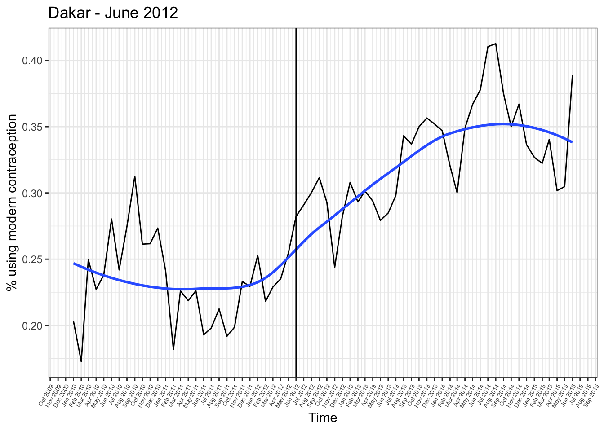
monthly_rate_all |> filter(district == "Thies") |>
ggplot(aes(my, value))+
geom_line(aes(group=district))+
geom_smooth(aes(group = district),
method = "loess", formula=y~x, se = FALSE) +
geom_vline(xintercept = as.numeric(monthly_rate_all$my[27]))+
theme_bw()+
ylab("% using modern contraception")+
xlab("Time")+
scale_x_date(date_breaks = "1 month", date_labels = "%b %Y")+
theme(axis.text.x=element_text(angle=60, hjust=1, size = 5))+
ggtitle("Thies - April 2013")+
theme(legend.position = "none")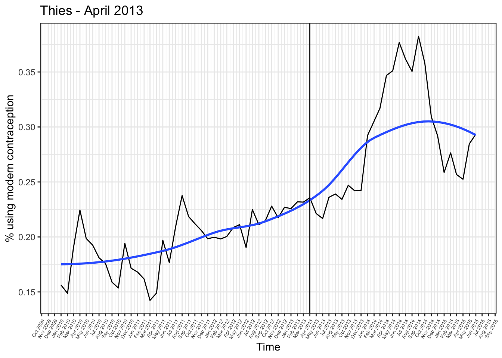
monthly_rate_all |> filter(district == "Kaolack") |>
ggplot(aes(my, value))+
geom_line(aes(group=district))+
geom_smooth(aes(group = district),
method = "loess", formula=y~x, se = FALSE) +
geom_vline(xintercept = as.numeric(monthly_rate_all$my[27]))+
theme_bw()+
ylab("% using modern contraception")+
xlab("Time")+
scale_x_date(date_breaks = "1 month", date_labels = "%b %Y")+
theme(axis.text.x=element_text(angle=60, hjust=1, size = 5))+
ggtitle("Kaolack - April 2013")+
theme(legend.position = "none")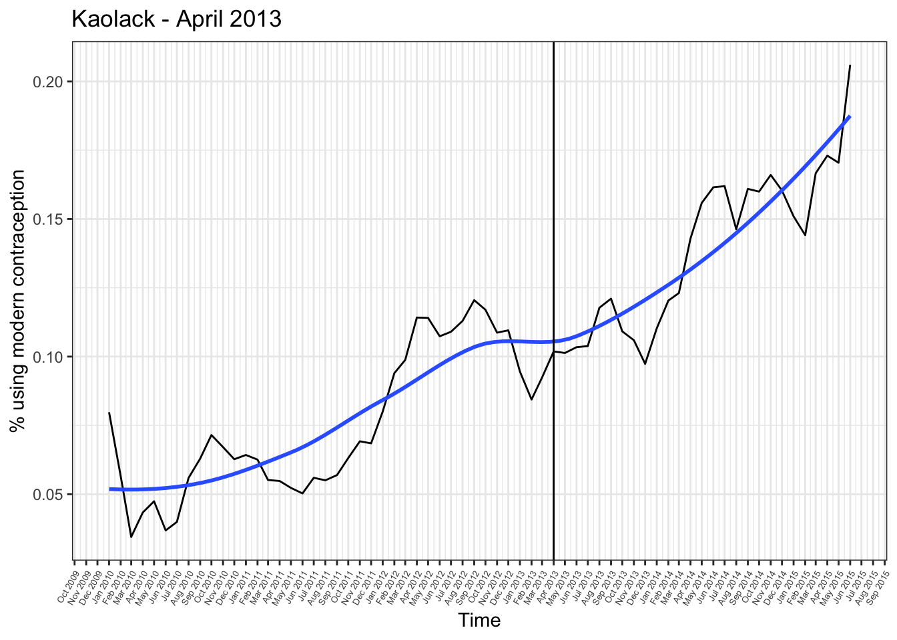
monthly_rate_all |> filter(district == "Diourbel") |>
ggplot(aes(my, value))+
geom_line(aes(group=district))+
geom_smooth(aes(group = district),
method = "loess", formula=y~x, se = FALSE) +
geom_vline(xintercept = as.numeric(monthly_rate_all$my[16]))+
theme_bw()+
ylab("% using modern contraception")+
xlab("Time")+
scale_x_date(date_breaks = "1 month", date_labels = "%b %Y")+
theme(axis.text.x=element_text(angle=60, hjust=1, size = 5))+
ggtitle("Diourbel - March 2014")+
theme(legend.position = "none")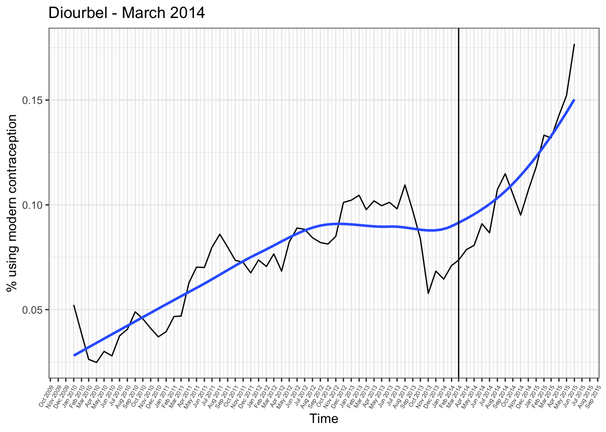
monthly_rate_all |> filter(district == "Kaffrine") |>
ggplot(aes(my, value))+
geom_line(aes(group=district))+
geom_smooth(aes(group = district),
method = "loess", formula=y~x, se = FALSE) +
geom_vline(xintercept = as.numeric(monthly_rate_all$my[16]))+
theme_bw()+
ylab("% using modern contraception")+
xlab("Time")+
scale_x_date(date_breaks = "1 month", date_labels = "%b %Y")+
theme(axis.text.x=element_text(angle=60, hjust=1, size = 5))+
ggtitle("Kaffrine - March 2014")+
theme(legend.position = "none")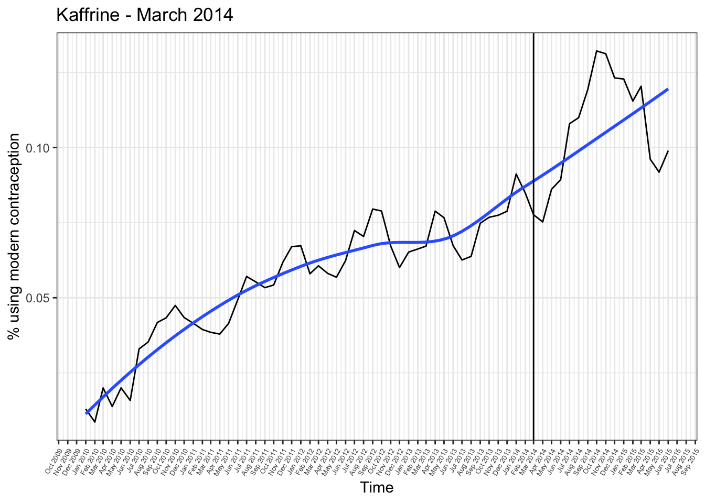
monthly_rate_all |> filter(district == "Fatick") |>
ggplot(aes(my, value))+
geom_line(aes(group=district))+
geom_smooth(aes(group = district),
method = "loess", formula=y~x, se = FALSE) +
geom_vline(xintercept = as.numeric(monthly_rate_all$my[16]))+
theme_bw()+
ylab("% using modern contraception")+
xlab("Time")+
scale_x_date(date_breaks = "1 month", date_labels = "%b %Y")+
theme(axis.text.x=element_text(angle=60, hjust=1, size = 5))+
ggtitle("Fatick - March 2014")+
theme(legend.position = "none")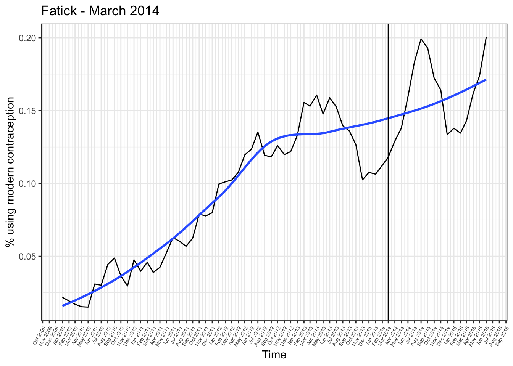
monthly_rate_all |> filter(district == "Matam") |>
ggplot(aes(my, value))+
geom_line(aes(group=district))+
geom_smooth(aes(group = district),
method = "loess", formula=y~x, se = FALSE) +
geom_vline(xintercept = as.numeric(monthly_rate_all$my[16]))+
theme_bw()+
ylab("% using modern contraception")+
xlab("Time")+
scale_x_date(date_breaks = "1 month", date_labels = "%b %Y")+
theme(axis.text.x=element_text(angle=60, hjust=1, size = 5))+
ggtitle("Matam - March 2014")+
theme(legend.position = "none")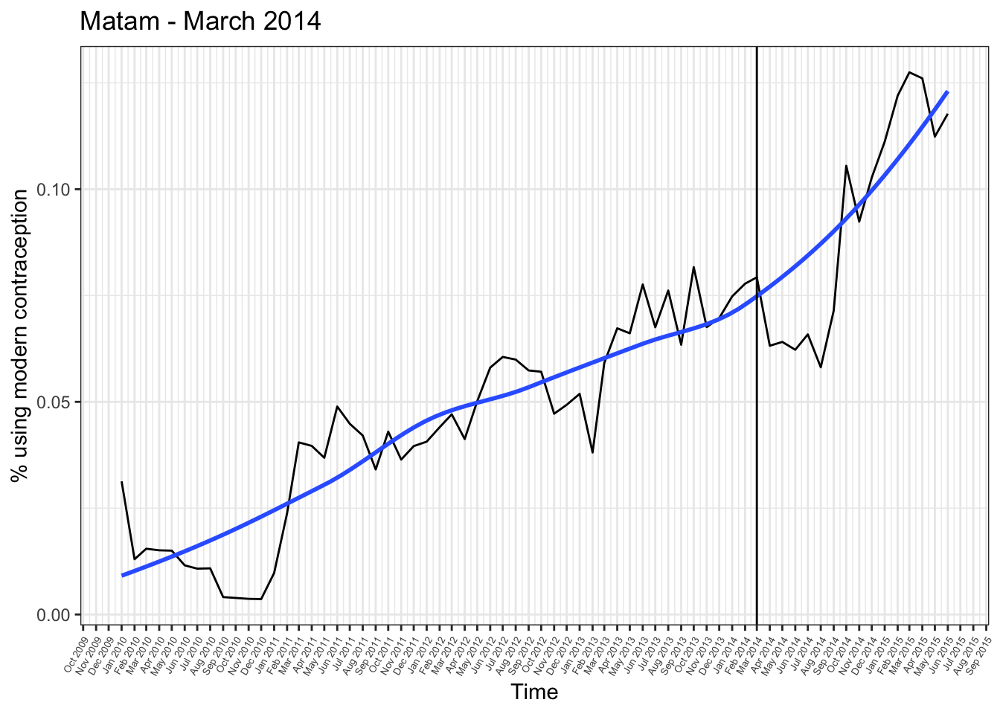
monthly_rate_all |> filter(district == "Saint-Louis") |>
ggplot(aes(my, value))+
geom_line(aes(group=district))+
geom_smooth(aes(group = district),
method = "loess", formula=y~x, se = FALSE) +
geom_vline(xintercept = as.numeric(monthly_rate_all$my[15]))+
theme_bw()+
ylab("% using modern contraception")+
xlab("Time")+
scale_x_date(date_breaks = "1 month", date_labels = "%b %Y")+
theme(axis.text.x=element_text(angle=60, hjust=1, size = 5))+
ggtitle("Saint-Louis - April 2014")+
theme(legend.position = "none")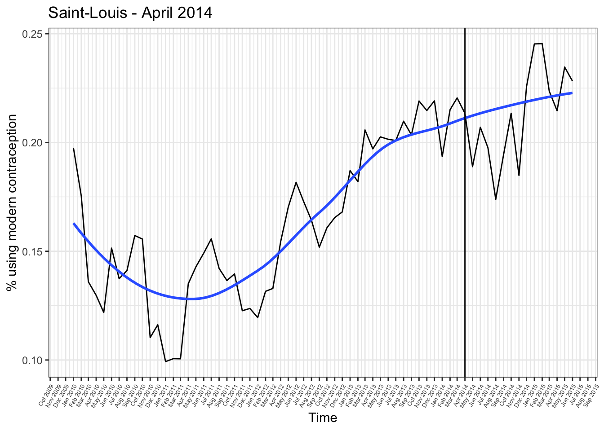
monthly_rate_all |> filter(district == "Louga") |>
ggplot(aes(my, value))+
geom_line(aes(group=district))+
geom_smooth(aes(group = district),
method = "loess", formula=y~x, se = FALSE) +
geom_vline(xintercept = as.numeric(monthly_rate_all$my[12]))+
theme_bw()+
ylab("% using modern contraception")+
xlab("Time")+
scale_x_date(date_breaks = "1 month", date_labels = "%b %Y")+
theme(axis.text.x=element_text(angle=60, hjust=1, size = 5))+
ggtitle("Louga - July 2014")+
theme(legend.position = "none")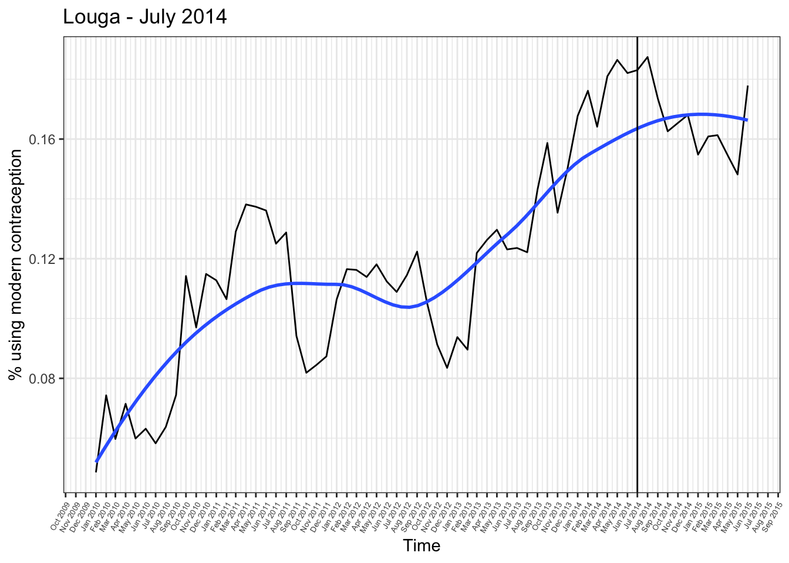
## Graphing with comparison districts
monthly_rate_all |> filter(district == "Dakar" | district %in% comparison) |>
ggplot(aes(my, value))+
geom_smooth(aes(group = district, color=phase),
method = "loess", formula=y~x, se = FALSE) +
geom_vline(xintercept = as.numeric(monthly_rate_all$my[37]))+
theme_bw()+
ylab("% using modern contraception")+
xlab("Time")+
scale_x_date(date_breaks = "1 month", date_labels = "%b %Y")+
theme(axis.text.x=element_text(angle=60, hjust=1, size = 5))+
ggtitle("Dakar - June 2012")+
theme(legend.position = "none")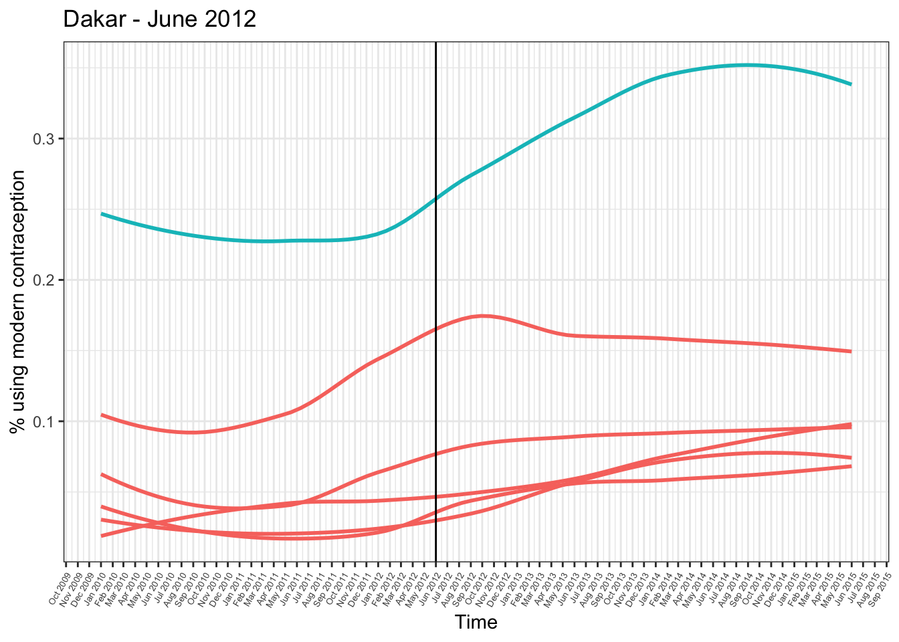
monthly_rate_all |> filter(district == "Thies"| district %in% comparison) |>
ggplot(aes(my, value))+
geom_smooth(aes(group = district, color=phase),
method = "loess", formula=y~x, se = FALSE) +
geom_vline(xintercept = as.numeric(monthly_rate_all$my[27]))+
theme_bw()+
ylab("% using modern contraception")+
xlab("Time")+
scale_x_date(date_breaks = "1 month", date_labels = "%b %Y")+
theme(axis.text.x=element_text(angle=60, hjust=1, size = 5))+
ggtitle("Thies - April 2013")+
theme(legend.position = "none")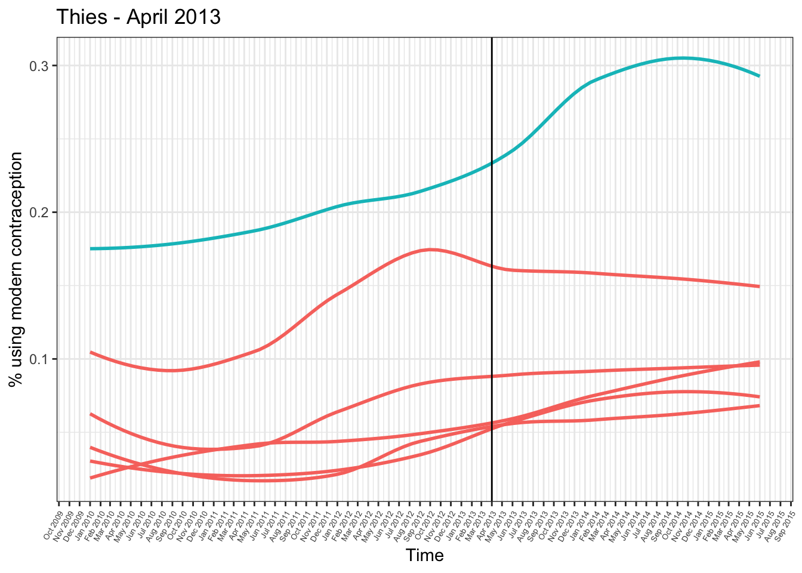
monthly_rate_all |> filter(district == "Kaolack" | district %in% comparison) |>
ggplot(aes(my, value))+
geom_smooth(aes(group = district, color=phase),
method = "loess", formula=y~x, se = FALSE) +
geom_vline(xintercept = as.numeric(monthly_rate_all$my[27]))+
theme_bw()+
ylab("% using modern contraception")+
xlab("Time")+
scale_x_date(date_breaks = "1 month", date_labels = "%b %Y")+
theme(axis.text.x=element_text(angle=60, hjust=1, size = 5))+
ggtitle("Kaolack - April 2013")+
theme(legend.position = "none")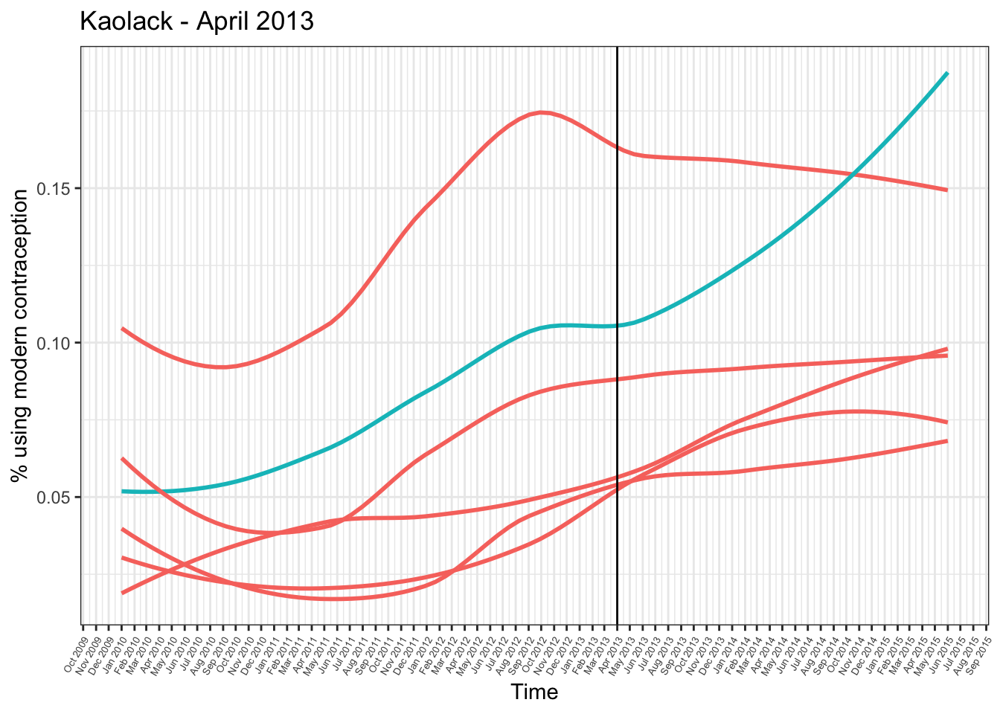
monthly_rate_all |> filter(district == "Diourbel" | district %in% comparison) |>
ggplot(aes(my, value))+
geom_smooth(aes(group = district, color=phase),
method = "loess", formula=y~x, se = FALSE) +
geom_vline(xintercept = as.numeric(monthly_rate_all$my[16]))+
theme_bw()+
ylab("% using modern contraception")+
xlab("Time")+
scale_x_date(date_breaks = "1 month", date_labels = "%b %Y")+
theme(axis.text.x=element_text(angle=60, hjust=1, size = 5))+
ggtitle("Diourbel - March 2014")+
theme(legend.position = "none")monthly_rate_all |> filter(district == "Kaffrine" | district %in% comparison) |>
ggplot(aes(my, value))+
geom_smooth(aes(group = district, color=phase),
method = "loess", formula=y~x, se = FALSE) +
geom_vline(xintercept = as.numeric(monthly_rate_all$my[16]))+
theme_bw()+
ylab("% using modern contraception")+
xlab("Time")+
scale_x_date(date_breaks = "1 month", date_labels = "%b %Y")+
theme(axis.text.x=element_text(angle=60, hjust=1, size = 5))+
ggtitle("Kaffrine - March 2014")+
theme(legend.position = "none")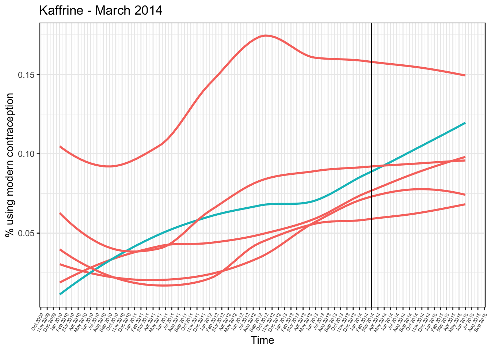
monthly_rate_all |> filter(district == "Fatick" | district %in% comparison) |>
ggplot(aes(my, value))+
geom_smooth(aes(group = district, color=phase),
method = "loess", formula=y~x, se = FALSE) +
geom_vline(xintercept = as.numeric(monthly_rate_all$my[16]))+
theme_bw()+
ylab("% using modern contraception")+
xlab("Time")+
scale_x_date(date_breaks = "1 month", date_labels = "%b %Y")+
theme(axis.text.x=element_text(angle=60, hjust=1, size = 5))+
ggtitle("Fatick - March 2014")+
theme(legend.position = "none")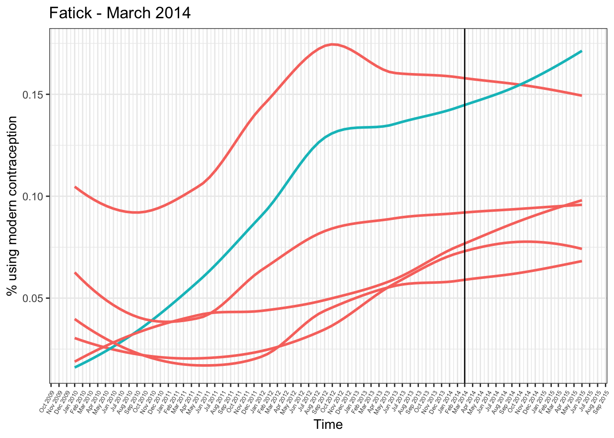
monthly_rate_all |> filter(district == "Matam" | district %in% comparison) |>
ggplot(aes(my, value))+
geom_smooth(aes(group = district, color=phase),
method = "loess", formula=y~x, se = FALSE) +
geom_vline(xintercept = as.numeric(monthly_rate_all$my[16]))+
theme_bw()+
ylab("% using modern contraception")+
xlab("Time")+
scale_x_date(date_breaks = "1 month", date_labels = "%b %Y")+
theme(axis.text.x=element_text(angle=60, hjust=1, size = 5))+
ggtitle("Matam - March 2014")+
theme(legend.position = "none")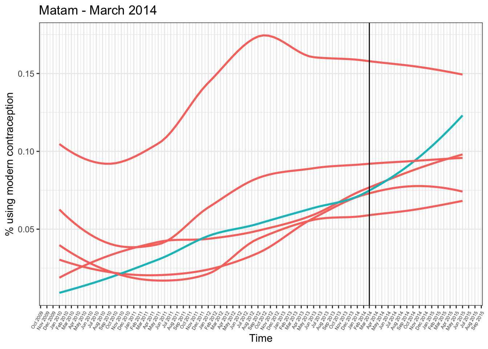
monthly_rate_all |> filter(district == "Saint-Louis" | district %in% comparison) |>
ggplot(aes(my, value))+
geom_smooth(aes(group = district, color=phase),
method = "loess", formula=y~x, se = FALSE) +
geom_vline(xintercept = as.numeric(monthly_rate_all$my[15]))+
theme_bw()+
ylab("% using modern contraception")+
xlab("Time")+
scale_x_date(date_breaks = "1 month", date_labels = "%b %Y")+
theme(axis.text.x=element_text(angle=60, hjust=1, size = 5))+
ggtitle("Saint-Louis - April 2014")+
theme(legend.position = "none")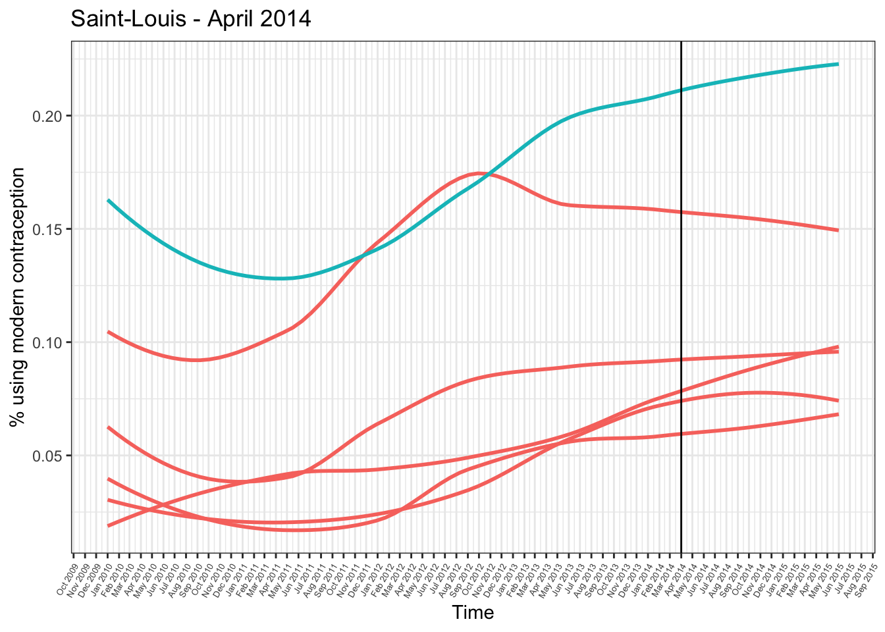
monthly_rate_all |> filter(district == "Louga" | district %in% comparison) |>
ggplot(aes(my, value))+
geom_smooth(aes(group = district, color=phase),
method = "loess", formula=y~x, se = FALSE) +
geom_vline(xintercept = as.numeric(monthly_rate_all$my[12]))+
theme_bw()+
ylab("% using modern contraception")+
xlab("Time")+
scale_x_date(date_breaks = "1 month", date_labels = "%b %Y")+
theme(axis.text.x=element_text(angle=60, hjust=1, size = 5))+
ggtitle("Louga - July 2014")+
theme(legend.position = "none")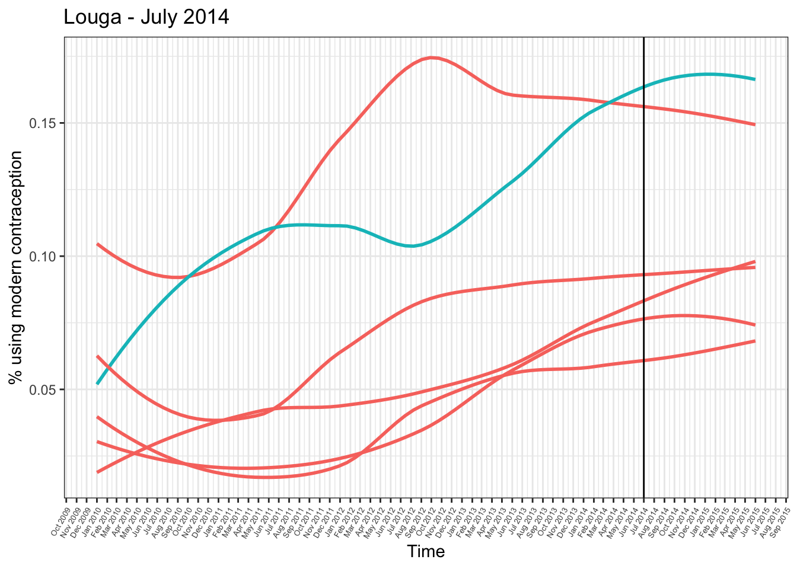